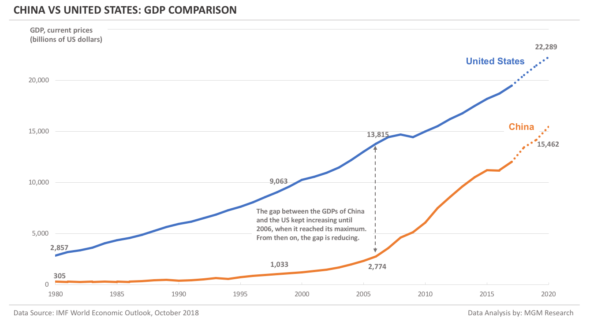

Thucydides’s Trap
GDP Comparison
Military Spending
Opinion Comparison
Our Team
GDP Comparison

China is catching up to America's share of global GDP
- Since 2006, the gap between U.S. and China GDP has been reducing as China is having more incremental GDP gains than the US each year (MGM).
- Between 1980-2006, China gained $2.5 trillion in GDP while the US gained $11 trillion. Therefore, the US had over 4x more incremental GDP gains than China during this period (MGM).
- Between 2006 and 2020, however, China gained $12.7 trillion in GDP while the U.S. $8.5 trillion. Therefore, the roles have now reversed: China's incremental GDP growth is higer than the U.S. The graph below shows how the GDP gap between the two countries has narrowed (MGM).

Text Sources:
MGM Research